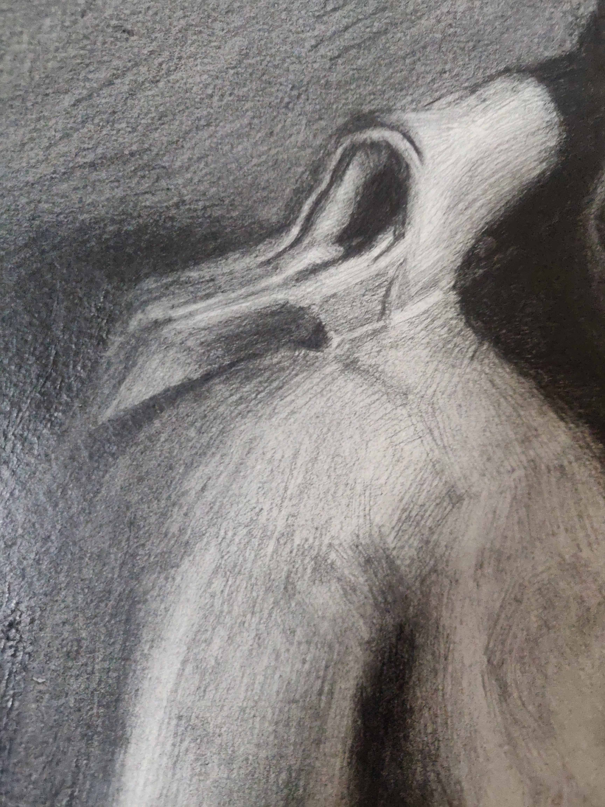
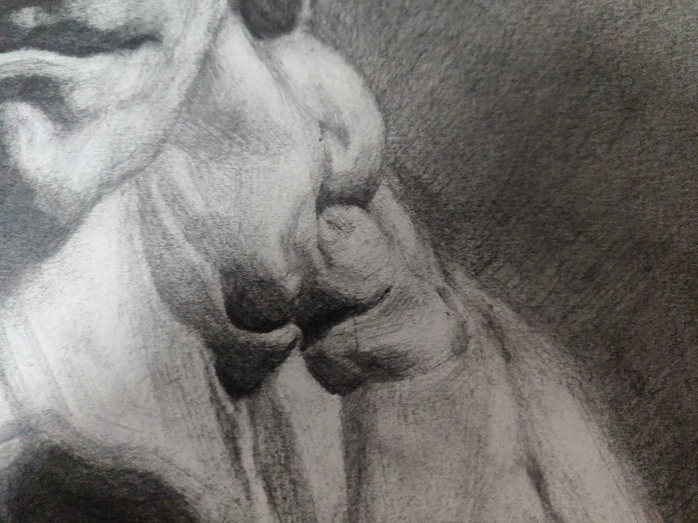
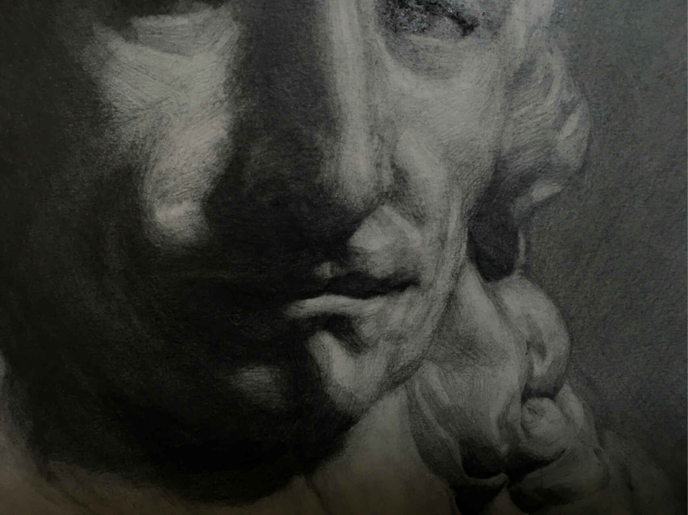

形体分解训练
Contents
形体分解训练#
- startat
2020-07-22
- endat
2021-05-06
- status
Finished
要求#
石膏像写生，光影为主，线条为辅，尽量使用直线，用最少的面画出形体。
备注
这个练习对工具有一些要求，如果使用铅笔作画，需要使用 260g 或以上的素描纸， 并备好 H, 2H 的硬铅
形体及其分解#
同样，下面的内容在 造型的诞生 中已经讲过了。
推荐阅读 《向大师学绘画·素描基础》 、伯里曼的随便什么书。
分解形体的依据#
写实绘画，以内在构造为主，外在形态为辅：
内在构造：内部结构的组合关系（对于生物来说是解剖关系）
外在形态：结构体块的组合和运动
对于不同的物象，其内在构造的知识是需要分别学习的，物象千万万难以学尽， 因此 通过观察揣摩形体组合的合理性 是需要掌握的技能。
通过观察同类物象来归纳共性
观察该共性在所要描绘的物象上是否明显——根据情况强化或弱化
形体的组合 和形体的分解相反，从组合的视角出发能够更有目的地分解形体。
分解形体的原则#
由大到小，先画大形体，再画小形体
由暗到亮，先画暗面再画亮面（由作画媒介决定）
由共性到特性，先根据对象的共性把体积感画出来，再调整形体突出对象的特性
形体要挨着画，体积感是在形体和形体之间的连接产生的
结构体块#
关键的形体不一定在起伏和深浅上明显，但在物象的内在构造中起着关键的衔接作用 。
晓飞老师把这些关键的形体叫做 结构体块 ，结构体块往往是微小的不明显的起伏 （大的明显的就不需要单独拎出来讲了，很直观），在画面上画出这些体块能够暗示物象 的内在构造，增加画面的信息量。
对内在构造的了解以及良好的观察力是识别结构体块的两大途径。
人的结构体块#
额丘中心的高点
额头、后脑勺、侧脸的连接点
连接两个不可变体块大体块的体块
后颈肉（连接后脑勺与脖子）
脖子和肩&胸腔的连接处
肩上的肌腱（分割了人的正面与背面）
观察方式#
以下的几种观察方式都赖于良好的空间想象能力和空间感受能力。
备注
画的时候用余光看物象，往往能比较容易地感受到物象的空间
- 看形体之间的联系
- 对应和对称
在画一个形体的时候，要盯着这个形体对应的形体看，例如在画左眼的时候， 要注意物象的左和右眼之间形成了何种空间关系
不完全对称的物象，它们的形体是可能是不对称的，但「势」是对称的 （在空间上都有朝同一个方向的趋势），要把这两个形体形成的「势」画出来
- 附着与穿插
大的形体是由小的形体堆叠或附着形成的，画小形体的时候要注意遵从它在 大形体中的「势」
- 看 两种匹配关系
之前已经提过，要确保每一个画出来的暗部都经过这两种匹配关系的分析 在形体阶段中，可以看到匹配关系的另一种解释：
多个形体在光源的作用下，其暗部融合在一起，该暗部的形状由这些形体共同决定
一个复合形体在光源的作用下会有多个暗部，这些暗部共同地组成了这个复合形体的背光面
关键的起伏#
物体上的微小的关键起伏，往往暗示了其内在构造。 我们需要看出单个形体和周边形体之间的联系，以及这个联系凸显出的关键起伏 根据面的朝向画出轮廓，而非看轮廓线的角度
待处理
没有很懂
分析每一个面的走向（及形成该走向的原因：中立、拉力等） 视觉上被严重压缩的形体尤要仔细分析
寻找特征#
待处理
暂时还不太能触及到，所以没有太多的总结
形体的特性可以说是「和共性不一样的地方」，体现为：
轮廓线/面的内部/面与面之间的长短宽窄
关键的转折在何处发生
备注
以上的变化不能通过死盯着某个形得出，而应当通过对比共性， 在 大的视觉感受上 的对比得出
作画步骤#
作画步骤的意义在于 指导在作画过程中，特定阶段的目的（抽象的）， 目标（具体的，能明确判断的）以及达成的手段 。
好的步骤的目的是有逻辑的，自洽的，目标是单一的，明确的。
备注
一个常见的误区就是在每个阶段中都把 美 作为目的之一，会影响对其他目标的判断
即使以美为作为绘画目的，也不必在每个阶段中都以引入，一个佐证是古典肖像技法 （可能指的是 🔍The Flemish Technique ）会有将青灰色铺满皮肤的瘆人的 「死人灰」阶段，青灰底作为素描关系的梳理，能够为后面的步骤提供指导， 在最终的画面中亦能够为皮肤提供若隐若现的青灰色，呈现出最终的美。
「遵循步骤」并不简单，特定地针对这套步骤，需要破除很多观念：
不以美为目的，更激进地，不以 「绝对的形准」作为目的
不混淆目的与目标，前者务虚后者务实
保持清醒，朝着单一的目标前进，避免无效的乱画—— 对我来说， 目标明确是提高作画速度的最有效方式。
备注
尽管遵循步骤如此重要，但步骤不是用来限制自己的
在没有形成肌肉记忆之前，严格遵循步骤有助于触及更高的高度
在进度停滞的时候，要注意自己是不是偏离了该阶段的目标
0. 找亮暗面#
- 目的
起型
- 目标
找出所有的亮暗面
- 手段
#️⃣亮暗面的定义、各种观察手段
纯粹的「找亮暗面」应该在 光影分解训练 中训练过了，从光影训练的一个项目 变成形体训练的一个步骤，其目的发生了改变：因而侧重点也改变了：
光感适中即可，颜色尽可能浅，方便修改
更注意型的准确型 —— 作为一个长期的作业，型越不准，后期要编的地方会越多
不变的是：
不考虑固有色
严谨地区分亮暗面，在难以判断的地方绝对不看颜色
由大到小地找出 所有面 再小的地方，非画面中心的亮暗面也要考虑到
遵循
#️⃣两个匹配关系，抄形状是下下策小技巧
在初窥形体的门径后，引入形体意识，可以更多地靠直觉画， 而把
#️⃣两个匹配关系作为检查手段，速度上会快一些
面对特定问题的特定思路：
#️⃣两个匹配关系告诉我们要注意注意暗部为哪些形体服务， 在多个尺度上，服务的形体可以有多组（比如下巴的底面同时也作为头的底面）， 最大的那个尤要注意——因为往往被忽略为每一个投影明确投影物和投影所在物。换句话说，明确每个投影的成因
暗部是有明确的边界的。但因为深灰的影响，观感上似乎总是比实际上更大
1. 梳理秩序#
- 目的
规划画面不同区域的用色
- 目标
画出深灰、浅灰、白、浅黑、中黑、黑 六个色层
- 手段
归纳面的方向
这一步骤应当和 0. 找亮暗面 都属于光影问题，但区别在于前者有可以通过纯碎的理性判断， 而后者难以做到，究其原因：
物象往往有多个形状各异光源（而非理想的点光源），视情况还需要考虑复杂平面上的反射
物象有不同的固有色
面的方向，或者说面的 📖空间角 是一个连续的量，人眼没有能力精确地对其归纳分类
秩序问题落实到画面上是颜色问题。规划整个画面中各区域的用色。后面 2~N. 梳理形体 的时候， 面的颜色都要依据这一步的规划。因此， 在解决形体问题之前，必须先解决秩序问题。
备注
某种意义上，梳理秩序也就是也是画了最大的形体
同样，类似的训练在 光影分解训练 中也存在，但引入了固有色、多光源、 反光等 Real World 的因素，
主观地看深浅只能占很少一部分，主要还是按面的方向给色层
固有色的不同通过同种色层的深浅区别，不同色层在不同固有色之间的比较毫无意义
反光可以认为是和主光源相反方向的光，往往对形体和空间起破坏作用，需要尽量弱化
在梳理好主光源的情况下，再引入次光源是
备注
色层是建立在面上的，面的方向一旦改变，给颜色的时候就要重新考虑
给颜色的时候一定要 明确自己在画六个色层中的哪一个 ，手头上可以不那么准， 但意识上一定要明确
限制才能带来秩序 ，颜色 宁可雷同 也不要超出六个色层的限制
2~N. 梳理形体#
首先确定要梳理的形体
在形体中找面：这个形体由哪些面组成，面从哪里开始，在哪里结束
备注
如何找面？ 面总是从转折开始。对于转折均匀的形体，要结合光源选取一个合适的转折
确定每一个面都属于哪个形体的什么部分
备注
搞明白这个面属于形体的哪一部分，画的时候的空间意识就会更强， 会更主动地往体积感更强的方向画，能更容易地 盯着空间画
通过尽量少的面建立 特征
备注
如何建立面 / 如何区分不同的面？
通过色层：为每个面分配颜色（白、浅灰、深灰、黑、中黑、浅黑） 分配的依据主要是方向
备注
不要看颜色，看方向 ，和 2. 增加中黑和浅灰 一致：
方向不同的面往往受光不同，因而呈现出不同的颜色
同方向的面在颜色上往往可以归纳为一类
推断出一个面的颜色，所有同方向面的颜色就都能确定了
备注
给颜色时 不要平涂 ，用线的方向要跟随 形体的走势
平涂是 光影分解训练 中的要求，在全因素素描中， 笔触的方向能够为形体的方向提供暗示， 若方向一致， 能带来比平涂更强烈的空间感。若不一致，则会使画面的空间感混乱。 因此： 笔触的方向应当总和形体的方向一致，否则，不要在画面中出现任何笔触 。
如何判断用线的方向？ 一般来说，用线的方向就是画者的视角看， 该形体 在空间上跨度最大的方向
待处理
补图例
通过结构：
备注
色层是有限的，当需要区分被归纳在一个色层里的不同面时，就需要通过结构区分
不同走势的面，给色层时可以不同方向的用线区分
一边为轮廓线的面，可以通过轮廓线的变化区分
根据 分解形体的原则 之四，确定下一个要梳理的形体，直至处理完整个画面
备注
在梳理过程中，应当避免修改大的形体，让现有的形体互相匹配即可
形体推移形成空间#
N+1. 画结构#
在现阶段的训练中，塑造是 作画步骤 的最后一步。
备注
如果使用铅笔作画，那在这一步，需要使用削得极尖的 HB, H, 2H 级别的铅笔。 用（大约 500 目的）砂纸可以方便地打磨铅笔头。
此时的画面，画面的黑白灰秩序已经确立，在已有的秩序下，有三种「形体」需要被塑造：
- 结构
结构被定义为「形体和形体之间的联系」，也可以说是「形体和形体之间凹处的小形体」。 画结构，就是将之前 梳理 好的，孤立的形体联系起来， 形成一个饱满的、结实的物象
- 细节
细节则是「不影响形体和结构的小形体」，比如木头的裂纹、石膏的磕碰，适当的细节 能强化物象的质感，加强真实感
备注
细节的塑造在少不在多，需要取舍。一般来说：
亮部由于暗部
转折处优于平面
最终塑造与否还是要回归到画面上。
- 最小的形体
在 2~N. 梳理形体 结束之后，我们已经得到了最小的形体（排除结构和细节）, 并将其用尽量少的面建立起来了，我们需要让面与面的过渡和实际的物象相符。 面内部的变化也要细致地表现出来
待处理
瞎说的，还得继续修正
塑造的时候更需要讲究用线，一般有两种线：
- 结构线
顺着形体的走势
- 包裹线
横着的形体用竖线，竖着的形体用横线，转折处用交叉线
待处理
何时用结构线，何时用交叉线？

塑造中的荷马像，局部 注：晓飞老师改过#
被解开的疑惑#
如何起稿#
「如何起稿」是从我刚开始学习素描就一直苦恼的问题，在晓飞老师的训练中并不教你如何起稿。 因为这不是需要被解决的问题，「不会起稿」仅仅是「不会画」的一个体现， 而「不会画」则可以归因到「没有造型意识」，在初窥造型艺术的门径后，我总算能够总结出 自己在画光影绘画时的起稿步骤了：
观察方式 和 分解形体的原则 组合起来就是「如何起稿」， 前者提供了观察手段和判断标准，后者提供了明确的作画路径。
带着空间感画出物象大的剪影，画出主要形体的大致轮廓
备注
- 什么叫「带着空间感画」？
有点类似 盯着空间画，在起稿阶段，更具体一点， 需要搞清楚物象在空间上的关系，将其复制到纸面上，想象三维的物象投射在二维的纸上， 你的每一条线都是三维空间的棱在纸面上的投影
在有了轮廓的物象上找大的暗面，用浅色平涂，以光感达到 最佳 为准
备注
大部人都能够区分出不同画面光感空间感的强弱，这是我们长时间注视着 这个光影交错的现实世界所习得的敏锐。而「最」的程度，取决于你对自己画面的要求， 也限制了整张画最终能达到的高度
对于对称的物象（人、动物、建筑），找暗面的时候一定要「对称和对应」地找
两种匹配关系 能够处理更平凡的情况：
大形体上的多个小形体的暗面共同组成了大形体的暗面
带着光感继续找更小的暗面，判标准同上，直至找完 所有的 暗面
什么是「形准」#
广义来说，和谐的形就是准的。
备注
可以看看 📖忻东旺 后期作品中的形体
从写实绘画的角度出发，匹配 的，有空间感的、 特征明显的形就是准的。
在变化的视角下画画#
在不用工具辅助的情况下，视角是一个难以控制的变量。即使 ref:在地面上标记了你的位置 <在地面上标记你的位置>
也不能保证观察物象的你每次观察的时候挺直腰的程度，仰头的角度是一致的。
在画大尺幅的画时，不可避免的还要靠近物象，此时视角中的物象更是和之前不同。
警告
广为流传的「看轮廓线的斜率」、「看外轮廓组成的三角形形状」在这个体系下应当杜绝， 尤其是后者。
「斜率」和「三角形形状」都会随着视角变化，由空间距离很远的边组成的三角形 甚至会随着视角变化而产生剧烈的变化，导致最后画出来的形其实是若干个视角拼成的「多视图」
建立自己的作画步骤#
在教学的过程中老师并没有说道明确的作画步骤，但要求每个人在学习过程中形成自己的作画步骤。 好的作画步骤应当是明确的，明确每个步骤的 要做的事情 和 期待的结果 以及 停止的边界 。
在初学阶段最好面面俱到，即把所有的事情都考虑到，由浅到深由大到小 逐级推进，时刻把空间和体积放在首位。
目前我总结出来的步骤是：
故障排除#
找出来的形体没有体积感怎么办？#
一般是陷入了抄形状的泥潭中，需要整理一下思路，从以下角度出发：
如何处理多光源的情况？#
先确定一个主光源，判断色层时主光源占主导地位。在 2~N. 梳理形体 的中间阶段再介入次光源。 一般来说，多个光源叠加的暗部为中黑。
作业#
荷马像#
- 编号
m-000
- 日期
2020-07-30
- 尺幅
- 媒介
- 画集
{kind=link}
荷马像#
多光源下的 📖荷马 像，左 3/4 侧面。
因为纸不好，只梳理了一遍就没有继续画下去。
荷马像#
- 编号
m-001
- 日期
2020-09-14
- 尺幅
- 媒介
- 画集
{kind=link}
荷马像#
多光源下的 📖荷马 像，右 3/4 侧面。
整体来说画得非常顺利，过程中遭受了一些来自外界的痛苦，但活下来了。
「顺利」不意味着我走在正确的道路上，最终的画面效果很好，但其实我是只是停留在对老师用笔的模仿上，彼时根本不了解「形体」为何物。
高乃依像#
{kind=link}
高乃依像#
多光源下的 📖皮埃尔·高乃依 像，右 3/4 侧面。
这张画比起 《荷马像》 的曲折多了，不止有来自外界的痛苦，画这张画的的前大半时间都是煎熬的。
- 2020-09-15
裱纸开画，纸是茜玲给的水彩纸
- 2020-09-24
回家养病
- 2020-12-07
回画室
- 2021-02-08
回家过年
- 2021-03-08
回画室
- 2021-04
顿悟—— 天宇说的「形色分离」是改变观念的契机
- 2021-05-06
觉得够了
一些局部：
  {kind=link}
{kind=link}
{kind=link}
{kind=link}
九月回家前的样子#
戴帽子的老人像#
- 编号
m-003
- 日期
2020-10-12
- 尺幅
- 媒介
- 画集
{kind=link}
戴帽子的老人像#
在家休养期间，在蔓纯老师画室画的，单光源下的戴帽子的老人像，右 3/4 侧面。
没学到家，只是单纯地在模仿光。
如果你有任何意见，请在此评论。 如果你留下了电子邮箱，我可能会通过 回复你。